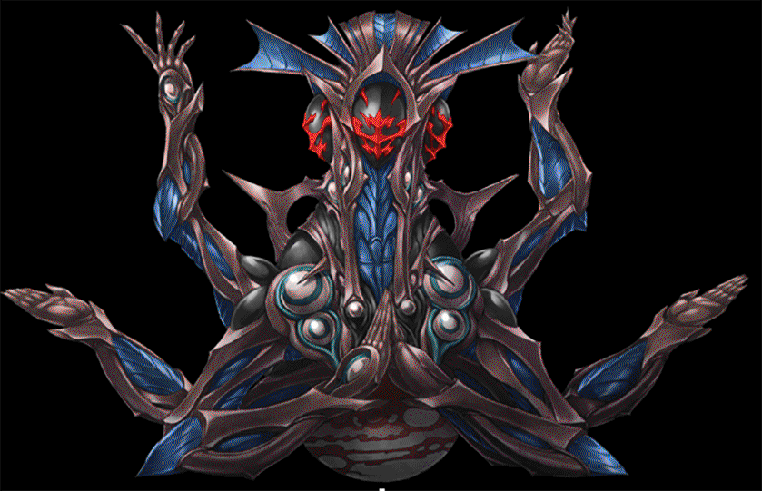
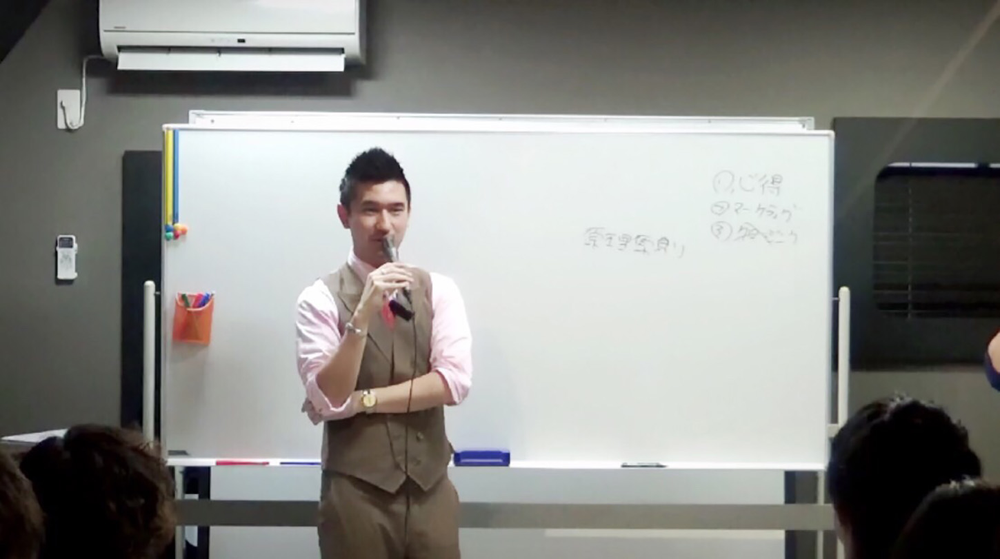
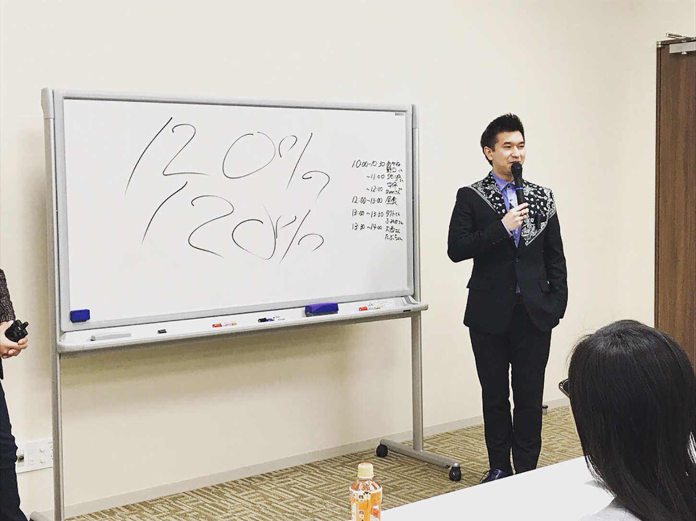

| 人生はRPGゲームだ！ 〜あなたは「勇者？」それとも「臆病者？」〜 | |
| Seiya | |
| Hitotsuku Publication (2018) | |
Seiya
突然ですが、「人生とはＲＰＧゲームだ！」
本当にそう思う。
ＲＰＧゲームを、男なら一度はやったことがあるのではないでしょうか？
ファイナルファンタジー。
ドラゴンクエスト。
最近だとモンスターハンター。
ＲＰＧゲームの流れはどれもよく似ています。
主人公がいて、レベル１のとにかく弱い状態からのスタートです。貧弱で、装備や仲間もいません。
そこから敵を倒してレベルを上げることで仲間が増え、自分の装備がどんどん豪華になっていき、ボスを倒していきます。
これが基本的なＲＰＧゲームの流れです。
私は昔からＲＰＧゲームが大好きで、相当やり込んできました。
そしてリアルな人生で、経営者として富と時間を手に入れた今、ゲームに例えると「それなりのところ」まで来ました。
そこで思ったのです。
「あれ？ 人生ってリアルＲＰＧゲームだな」と。
そもそも私達の人生でのボスって何でしょう？
私が人生でボスと例えているのは、金銭的な壁です。
あなたは将来、どのくらいのお金が、そして敵が襲いかかってくるのか知っていますか？
そしてあなたは、敵を認識して、自分の武器や防具を磨いているでしょうか？
まだ、敵を認識していない人のために、具体的にどんなボス達が出てくるのか見てみましょう。

■30
歳から65
歳までの月々にかかる生活費
１ヶ月平均29
万６５１２円
35
年間合計１億２４５３万円
■住宅購入費用（ローン）
全国平均３７３３万円
■子どもの教育費用（子供１人あたり）
７６７万円（幼稚園から大学まですべて公立）
２２２９万円（すべて私立）
■定年後にかかる生活費(65
歳から85
歳まで)
普通の暮らしで老後20
年５３５２万円(１ヶ月平均２２．３万円)
ゆとりある暮らしで老後20
年８７８４万円(１ヶ月平均３６．６万円)
■上記すべての合計
子ども１人で全公立、ゆとりない老後２億２３０５万円
子ども１人で全私立、ゆとりある老後２億７１９９万円
子ども２人で全公立、ゆとりない老後２億３０７２万円
子ども２人で全私立、ゆとりある老後２億９４２８万円
このボス達って結構強くないでしょうか？
ちなみに日本人の平均生涯賃金は２億９０９万円です。
あなたの持っている武器で倒せそうですか？
このボスの強さを知った時、多くの人はボスを倒そうとして、「ノウハウ」という名の剣を求めます。
投資で勝つノウハウ。
アフィリエイトで稼ぐノウハウ。
物販で稼ぐノウハウ......。
確かに、世の中には成功する方法がたくさん溢れています。本屋に行けば成功本なんていくらでもあります。
でも、実際に成功している人はごく僅かです。一体何故でしょうか？
それは、もう一つ大事な武器の存在を忘れているからです。
その武器とは、あなたの「心」そのもの
なのです。
私は何百人と教え子を育ててきた経験上、わかることがあります。
それは、結局どんなに良い武器（ノウハウ）を渡しても、渡した人の心のレベルが低かったら、その武器は使いこなせないということです。
ノウハウというのは、「ＬＶ１００の武器」のようなものです。
本屋さんにも「ＬＶ１００の武器」が一杯並んでいますよね？
では、冒険を始めたばかりのＬＶ１の主人公に、いきなりＬＶ１００の武器を渡したらどうなるでしょうか？
そうです。全く役に立ちません。レベルが釣り合ってないから武器を使いこなせないのです。
両手で頑張って武器を持てたとしても、重たすぎてすぐに落としてしまいます。
いくら本屋でノウハウを仕入れても、使いこなせないのです。
しかも、レベルの高い武器を持ちたがる人に限って、根本的な自分のレベルは上げずに、楽に敵を倒せる武器を探し続けるものです。
これが、ノウハウコレクターという人達の実態です。
そんな人は一生、敵を倒すことなんてできません。
楽しては稼げないのです。
本田圭佑やイチローだって、きっと泥臭く頑張ったからこそ成功しています。
バットやボールだけが良いわけではないのです。
貰った武器を必死に使いこなそうと毎日訓練しているのです。
その努力があってこそ、武器と自分の心のレベルがマッチしてうまくいくのです。
逆に言えば、自分の心のレベルさえ上げてしまえば、どんな武器を貰っても使いこなせる最強の戦士になれます。
イチローが安いバットを持った瞬間に中学生レベルになることなんて、あり得ませんよね？
本書は、これからあなたがどんなノウハウを使っても成功できるように、あなたの心のレベルを上げることを目的としています。
ぜひ、本書でレベルを上げ、手に入れた武器の能力を最大限生かしてもらいたいと思います。

突然ですが、問題です。
父親が公務員、母親が専業主婦の一般家庭に生まれた大学生が、最短でお金持ちになる方法を考えてください。
ちなみに、「宝くじを買う」ではありません（笑）。
正解は......「お金持ちに近づく」
です。
意外でしたか？
ちょっとわかりにくいと思うので、例を挙げて解説していきましょう。
あなたは、ドラゴンクエスト３をやったことがありますか？
このゲームは４人グループで、大魔王を倒しに冒険に出るゲームです。
４人ともレベル１からスタートして、敵を倒すとレベルが上がるようになっています。
主人公は「勇者」で、仲間には「戦士・武道家・魔法使い・僧侶・賢者・遊び人」などの職業があり、レベル20
になると転職することもできます。
ただ、転職するとレベル１に下がってしまい、再度レベルを上げる必要があるのです。
ここでは、「４人のうち３人がレベル20
のままで、１人だけ転職してレベル１になった」と過程して話を進めましょう。
戦士 ＬＶ21
勇者 ＬＶ20
魔法使い ＬＶ20
賢者 ＬＶ１
このとき「３人がレベル20
」なら、「残りの１人がレベル１」でも、「レベル20
クラスの敵」と戦って敵を倒すことができます。
レベル１の人が戦わず何もしていなくても、他の３人と同様、高い経験値を「おこぼれ」としてもらうことができるのです。
そうすると、このレベル１の人は、レベル20
クラスの経験値を手にするので、一気にレベルが７くらいまで上がることになります。
戦士 ＬＶ21
勇者 ＬＶ20
魔法使い ＬＶ20
賢者 ＬＶ７
人生って、これと同じなのです。
自分のレベルが低くても、レベルの高い人たちに囲まれていると、短期間で成長することができる
のです。
あなたも自分のレベルを上げたくなって、あるお金持ちの社長に近づいたとします。
その時に、あなたが社長に気に入られて、いつも一緒にいることができたとしましょう。
お金持ちの社長の友達は、たいてい、お金持ちの社長です。
そうすると、いつもお金持ちの社長に囲まれていることになるので、お金持ちの人たちの思考・習慣・実行していることが見えてきます
。
そうしているうちに、どんどんとお金持ちになることのハードルが下がってきて、「自分でもできるかも」と思えるようになってくるのです。
場合によっては、お金持ちの社長がサポートしてくれるかもしれません。
その結果、あなたはドラクエのように、今のレベルでは決して体験できないような経験値がつめ、最短でお金持ちになれるのです。
夢を叶えたり、大きな目標を達成したりするのに最も大切なこと。
それは、才能でも、努力でもありません。
すでに、その夢を叶えたり目標を達成したりしている人に近づくこと
です。
実際に、私はこの方法で夢や目標を達成しました。
そして、私の教え子達も各自の目標を達成することができました。
ですから、「私にはどうせ無理」とあきらめないでください。
すでに目標を叶えている人たちに近づけば、無理なんてことは感じないはずです。
人生は、「レベルの下がるドラクエ」この言葉をぜひ覚えておいてください。
ここまで読んで、賢明なあなたは少し疑問を抱いているかもしれません。
「レベルの下がるドラクエ」の「レベルが下がる」って何だろう？ という話です。
実は、人生にはゲームにない恐ろしいことがあるのです。
それが、「レベルが下がる」ということです。
ドラクエでは、転職以外でレベルが下がることはありません。
ところが人生の場合、レベルが下がる
のです。
高校時代に部活で一所懸命やっていても、大学に入ってから部活もサークルもバイトもやらないでダラダラしていたとします。
そうすると、体力も筋力もモチベーションも下がるはずです。
そうです。レベルが下がっているのです。
ゲームは、何もしなくてもレベルは下がりませんが、人生においては、しっかりとレベルが下がります。
だから、人生において、レベルが常に一定ということはありません。
上がるか下がるかです。
だからこそ、レベルは常に上げるべきですし、上げようと思えば、レベルの高い人にどんどん近づいていくべきです。
レベルが下がる人生なんて面白くはありません。貧乏で失敗ばかりで、引きこもる人生が面白いですか？
お金と時間に自由があり、自分の夢が叶えられる、そんなレベルの高い人生の方が絶対に楽しいはずです。
あなたには是非、レベルの上がり続ける人生であってほしいと思います。
そのためにも、「お金持ちになるにはお金持ちに近づく！」です。
もう少し、この話を掘り下げてみましょう。
例えば、こんなことってあるでしょうか？
いきなり自分の家に年収１億円の人が来て、「稼ぎ方教えます！」
あり得ないですよね？
ゲームの話で例えると、レベル１の人がレベル１００の人と一緒に冒険に出るようなものです。あり得ません。
コネとかがあれば別ですが、実際にそんなことはまず起こらないでしょう。
レベル１の人はレベル１の人と群れますし、レベル１００の人はレベル１００の人と群れるわけです。
年収３００万円の人が年収億越えの人と肩を組んで、「めっちゃ価値観合うわ〜！」とはならないのです。
類は友を呼ぶってよく言いますよね。
だから下の人が上に行くには、自分から情報を取りに行くという攻めの姿勢がないと上には行けない
のです。
仮想通貨も、「良い情報」は「良い情報を持っている人」の元に来ます
。
普通の人には一切降りてこない情報もあるわけです。
稼げる人はより稼げる。
まさにその通りです。
人生において本当に必要になってくるスキルは、自分から攻めないと手に入らない
ってことですね。
ここでちょっと質問をしたいと思います。
実は今からする質問によって、その人が将来お金持ちになれるかどうか"あっさり"分かってしまいます（笑）。
ちなみに場所とか名前は適当なので、気にしないでください。
■問題１「レストランで、ジョーという男性がコーヒーを飲みながら考え事をしています。彼が考えていたのは、これから先のことについてです。では、彼は具体的に何を考えていたのでしょうか？」
あなたも考えてみてください。
答えは出ましたか？
この質問は、「メンタリスト DAIGO の好きをお金に変える力」で出て来た話題です。また、アメリカのコロンビア大学で、経営者１００人とサラリーマン１００人に出題された質問でもありました。
では、答え合わせです。
この問題、収入の少ない人ほど「近い先」のことを答えたのです。
例えば、「レストランでこの後何を食べるか」や、「この後どこに行こうか」など、"短期的"に答えたのです。
一方で、収入が高い人、またはこれから収入が高くなる可能性が高い人は、「５年後とか10
年後とか、ずっと先のことについてジョーは考えていた」と答えたのです。
つまり！ 長期的な視点を持っているかどうかが、将来的に高い収入を得られるかに繋がっている
のです。
長期的な視野を持つ事の重要性について、私の体験談も少し紹介しましょう。
私は元々会社員をしていました。
一言で言います。
今日を生きるので精一杯でしたね（笑）。
居酒屋で働いていた時は、出勤したら予約リストを確認して「今日乗り越えられるかな......」とか。
金曜日になったら「明日は休みだ〜」とか。
日曜日は「明日からまた会社だ〜」とか。
つまり、無意識のうちに短期的な視点になっていたのです。
会社員みんなが同じ考え方だとは言いませんが、半年後まで考えている人って少ないと思います。
でも私も今、経営者とかオーナーの立場になって思うのです。
「そもそも今日のことしか考えていない経営者ってどうですか？」と。
実際に今、私は相当先のことまで考えて生きています。
それこそ、５年後とか。
オリンピックがあって、その影響がどう自分の仕事に影響が来るかとか。
まず長期的視点を持って、そこから逆算して今日を生きている
ってイメージです。
しかもこれを無意識のうちにやっています。
経営者の多くの人は、「日々の無意識」が長期的になっています。
逆に、会社員は「日々の無意識」が短期的になっています。
短期的な視点しか持てていないのに、長い人生がうまくいくわけもありません。
要は、その場しのぎの人生では、長期的に成長することはできないということです。
だから長期的な視点で物事を考える必要があるのです。
ここでもう１題、問題をやってみましょう。
■問題２「あなたは転職しようとしています。２人の社長の話を聞いて、どちらの会社に就職したいか教えてください。
Ａ社社長「私は常に短期的な視点で、目先の利益を考え経営しています」
Ｂ社社長「私は常に長期的な視点を持ち、長期的な視点から逆算して、会社を経営していきます」
さあ、どちらに就職したいですか？
そりゃあＢ社ですね......。
でも実際は、ほとんどの人がＡ社に就職してしまっています。短期的な事ばかり考えているのです。求人票の給料が良かったから入社して、後からブラック企業と分かり嘆いているパターンがまさにそうです。
求人票に書いてある最初の給料なんて、長期的にはあまり関係しないことが多いですよね？ でもやっぱり気になります。月給が高いと行きたくなりますよね。でもその会社の将来性は大丈夫ですか？ その会社で自分は成長できますか？
頭では分かっているのです。でも毎度、短期的に決めてしまっていませんか？
就職の話だけでなく、あなたの日常でも振り返ってみてください。長期的な視点を持って行動できていますか？
例えば、毎朝早く起きて読書をした方が、長期的な視点で考えれば良いですよね？ 誰でも分かりますよね？
でも実行できていますか？
なかなかできませんよね。
これが成功できるかどうかの違いです。
成功者って呼ばれている人は、「長期的な視点を持って、頭の中に成功のイメージを抱き、実際の行動がそれに伴い、継続できた人」
です。
ほとんどの人がこれをできないので、成功者って少数派になるのです。
では、ここで最後の問題をやってみましょう！ リラックスして問いに答えてみてください。
■問題３「今、あなたの前に１万円札が１枚あるとします。この１万円札、私が差し上げます。自由に使ってＯＫです。それをあなたは何に使いますか？」
答えは出ましたか？
この質問、今までにセミナーや講義で何百人もの方に質問してきました。
やはり多いのは、家族や友達と食事など。
あとは趣味の道具の資金にするなど......。
稀にギャンブラーもいますね（笑）。
「宝くじ買います！」みたいな！
さすがに、３問続けて同じような質問をしたので、あなたはこんな答え出してませんよね？
ちなみにこの質問、私に昔された質問でもありました。
当時、私が答えたのは「本屋さんに行く」でした。確実に１万円以上の利益になって返ってくるようにしたのです。
でも、ほとんどの方は、１万円を一時の幸せに使ってしまう......。
『問題２』のＡ社とＢ社の話をした時はみんな言うのです。
「長期的なＢ社の方が良いに決まってるじゃないですか〜」
「短期的なことばかり言っているＡ社長の会社に行く人なんていないですよ（笑）」
でも、『問題２』の後に『問題３』をすると、見事にみんな短期的な視野の答えを出すんですよね（笑）。
短期的な視野のＡ社はダメだと言ったのにも関わらず、今ここに１万円があると仮定すると、すぐに短期的な娯楽に使ってしまうのです。
人間って誘惑に弱いですね（笑）。
就職先を探すにしても、１万円を使うにしても、長期的な視野が大切です。
特にお金の使い方は、そのいかんで将来のリターンが大きく変わってくるので、少し詳しく見てみましょう。
お金の使い方は大きく分けて２つあります。
１つ目は、一時的な喜びが得られる単なる「消費や浪費」です。これは短期的な視野の使い方ですね。
そして２つ目が、将来的に収入として返ってくる「投資」です。これが長期的な視野の使い方です。
投資にも２種類あります。
１つはＦＸ、株、バイナリーなどのマイナスになる可能性がある投資です。
今回私がお伝えしたいのは、こちらではなく、本などの自分の血肉に変わる投資です。
知識への投資ですね。
知識は絶対にマイナスにならないし、一度つけたらそこから無限にお金が回収できます
。
つまり、回収率１００％
の投資です。
お金の悩みから解決される人は、長期的に見て必ず自分に返ってくる使い方を、意識的に選んでいます
。
だから、あなたも浪費に使うお金があるのなら、迷わず知識に投資してください。
昔、私もこの事実を知った直後に、昼食に行く時間になって悶絶しました。
「５００円鯖の味噌煮定食」と「１０００円のとんかつ定食」どっちを食べるか問題です。（笑）。
馬鹿馬鹿しいですけど（笑）。
価格差は５００円です。
別にそんなに痛くないですし、短期的に考えれば、とんかつ大好きなので、迷わずとんかつですね（笑）。
ですが一度立ち止まって長期的な視点で考えてみました。
「その５００円で帰り本屋さん行って本買った方が......」
「お昼眠くなるな」
「仕事できないな」
「そもそもとんかつ食べて収入上がるのか？」
こんな事を色々考えだしたのです。
このように、目先の利益ではなく、先の先まで見てみると、毎日の景色って変わります。
私は財布も持たなくなり、全部クレジットカード決済にしました。
そもそも財布は邪魔ですし、ＡＴＭに行くと手数料を取られます。
手数料も短期的に見たらそんなに痛くないですけど、１年とかで見たら、みんな結構な額をＡＴＭに取られていますね（笑）。
クレジットカードの一括払いなら、翌月に手数料なしで口座から勝手に落ちますし、カードは、どこでいくら使ったかをアプリで明確に分かるので、管理もしやすいです。
ポイントも貯まります。
気づいたら１万円分溜まっていたなんてことも......。
メリットづくしですね！
そもそもＡＴＭに行く時間が無駄です（笑）。
お金や時間がない人ほど、お金と時間の神様から嫌われる使い方を無意識でやっています。逆にお金や時間がある人は、意識的に時間やお金を大切にしています
。
だから神様がいたとしたら、愛されて、更に増えるのです。
時間とお金に対しての意識が全然違う。ここが大きな違いかなと思います。
ここまでは、「成功者に近づいてレベルを上げましょう」という話と、「成功者は長期的な視野を持っています」という話をしてきました。
ここからは、もっと具体的に「成功するための行動パターン」を紹介していきましょう。

あなたは貯金が好きですか？
日本人は世界で一番貯金が好きな国民って言われていますよね。
でも、貯金はダメです！ 若いうちはもっと効率的に使わないと勿体ないです。
もちろん例外はあります。
例えば、海外留学をするために貯金をするとか。
自分の事業を広げるために貯金をするとか。
こういった、目的のある貯金なら全然ＯＫです。
ここでダメと言いたいのは、ただ貯金することが目的の貯金です。
なぜなら、貯金は自分の自信を錯覚させるからです。
例えば、あなたの口座に１億円があったとしましょう。
そうすると、変な自信とか安心感が湧きませんか？
でも、これって誤解です。
貯金によって与えられた自信は、「偽り」
だということです。
要は１億円がなくなったら、自信も一緒になくなりませんか？ って話です。
だとすると、貯金による自信って偽りですよね？
なので今回は、本物の自信の付け方を特別に教えたいと思います。
「今日何か１つしか覚えられない」と言うのなら、「ここを覚えてください！」と言いたいくらい大切な事です。
何かと言うと......。
口座に貯まる貯金は、「あるもの」を満たすまでは最低限で良いのです。
では、そのあるものって言うのは......。
頭の中に貯まる貯金
です。知識や経験のことです。
頭の中の貯金が貯まったら、お金の貯金も好きなだけやってください。それまでお金は、頭の中に貯金をするために使うことが得策です。
なぜなら、目に見える「物」からくる自信って簡単になくなるからです。
例えば、〇〇さんの自信の源が高級車だとか１億円だったら。(これ極論ですよ？)
犯罪ですけど、私奪えますよね？
それが自信の源だったら、〇〇さんの自信も一緒に奪えません？
でも例えば、「人に教えられる税金の知識」とか、「コミュニケーションのノウハウ」とか、「売れる不動産の情報」とか、「投資や物販、アフィリエイトで稼げる能力」っていう「頭の中の貯金」があって、それが〇〇さんの自信だったら、私はそれを奪えますか？ って話です。
無理ですよね。
お金は奪うことができますけど、〇〇さんの頭の中から消し去って自分のものにすることは不可能です。
そういった知識や経験の貯金は、お金を一生生み続けてくれる自分の資産になります
。
例え知識や経験に何百万円かけようと、一度資産になってしまえば全然回収できるんですよね。
むしろ何十倍にもなって返ってきます。
私は１０００万円ほどかけてコミュニケーションの学校に通いましたし、税金のコンサルも、アフィリエイトのコンサルも、経営のコンサルも、物販も、投資も、色々と時間やお金をかけて学んできました。
自分にこれだけお金をかけましたが、この何倍って額が、この身に付けたスキルから生まれて返ってきています。
一生減らないですし、最強です。
短期的に見たら時間とお金もなくなるけど、長期的に見たらものすごいことになって返ってきます。
目に見えるものより、経験を買う
というイメージです。
でもほとんどの人が、順番を逆にしてしまいます。
若い頃に３００万くらいの車のローンを平気で組むのに、頭に残る知識にお金を使うことをしません。
なぜ維持費がかかって価値が下がる車にそれだけかけて、自分にはかけないのか、私からしたら意味不明です。
自分に課金すれば維持費もかからず、むしろ価値は上がり、一生物の知識が手に入ります。
確かに私も男です。
車が欲しい気持ちはわかります。
ですが、それは短期的な目先の利益しか見ていない視点です。
この車に乗ってモテたい！ とか。
そんなのは自分を強くした後からで十分です。
まずは自分に課金する事。
本来は自分の頭の中に貯金ができて、手元のお金にも余裕ができたら、目に見えるものに行くはずなのに、みんな目の前の娯楽や消費に時間やお金を使ってしまいます。
その結果、頭の貯金は一向に増えません。
そして収入も一定ラインから増えることはありません。
頭の中の貯金と収入は比例しますからね！
ですから、若いうちに自分の将来を見据えて、知識や経験にお金を使うようにしてください。
それがお金持ちへの近道です。
そもそも、お金を稼いでる人と稼げていない人の決定的な違いは何なのでしょうか？
まず、月収が普通レベルの人の話をすると、彼らは他人に決められた給料で生活をしています。
他人から、「あなたの価値はいくらいくらですよ」って決められている状態です。
では、お金を稼げている人は？
自分の給料を自分で決めるスタイルです。
つまり、自分の頭の中の貯金から生み出したお金で生活しています。
私の知り合いに、大手不動産会社のトップ営業マンの方がいるのですが、その人は会社員にも関わらず「億」という年収を稼いでいます。
なぜそんなに稼げるのか聞いてみると、営業ができなくて本当に悩んでいた頃の話を教えてくれました。
新入社員の頃の彼は、上司に何も教えて貰えず、営業成績も伸びなくて最悪の状況だったそうです。
そこで、外部の営業セミナーに学びに行き、２００万円の営業コンサルを受けることにしたのです。
彼は誰よりも早く出社し、誰よりも遅くまで残って勉強しました。
コンサルで学んだことを実践して、振り返ることを繰り返したのです。
結果的にそのコンサルが非常に良く、そこで得た「知識の武器」を使って会社で戦った結果、億越え営業マンになったそうです。
普通いないですよね、会社員で自分に２００万円も課金する人。
でも、だからこそ彼は成功できたのだと私は思います。
人がやらないことをやる。
シンプルですが、とっても大事なことです。
会社から「あなたの価値は１００万円ですよ」って言われるのを待っていたら、何十年先なんだって話です（笑）。
保証もないですし。
だったら先に「頭の中に貯金」を作って、行動して努力するほうが圧倒的に早いです（笑）。
自分の頭の中に資産を構築するためになら、お金を使って貯金がなくなっても全然挽回できます。
知識を使って何かのコンサルをしてもいいです、その生まれたお金でまた別のことでお金を稼ぐこともできます。
ここだけの話ですが、私は学生時代にいじめられて引きこもった過去があります。
さらに、見た目にもすごくコンプレックスがありました。
学校に行った時に、女の子と話しているイケメンがどれだけ羨ましかったことか（笑）。
でも社会人になって、富を手に入れ、圧倒的な頭の中の貯金を手にした今は、余裕ができて嫉妬という感情は全くなくなりました。
男にとって一番誇れる、稼ぐスキルがある。
これが自信の源になっているのです。
そういった意味で、「頭の中の貯金」さえ貯めれば、必ず自信は生まれます。
頭の中の貯金はできるだけ早く、若いうちに作る方が得策です。
そうすることで状況が一気に好転し、後が楽だからです。
この世の中は悲しいことに、稼げている人はより稼げて、稼げていない人はずっと稼げない世界です。
イメージ的には、売れている本がより売れたり、売れている芸能人がより売れたり、売れている商品がさらに売れるのと同じです。
お金持ちの子供がより良い教育を受けて、さらに鍛えられる......これも同じ原理です。
お金があれば、広告をかけられるし、自分の作業を外注して時間を作れるし、誰かのコンサルを受けて新しい知識を手にいれて、その知識からお金を生むことも可能です。
でもお金がなかったら、選択肢が減りますよね。
なので、私を含めて凡人（親が超金持ちとか天才以外は凡人です）は、何か大きいスタートダッシュを切らないと上に行けないです。
でもこのスタートダッシュって、短期的に見たらマイナスのトリプルアクセルです。
だって、時間は使うし、お金も使うし、努力もしないといけない。
人間が嫌いな３要素です（笑）。
だからみんなやらないで現状維持のままでいるから、これだけの格差社会になっているのです。
でも長期的に見たら、このスタートダッシュは大きな一歩になるってことです。
長期的な視点が大切です。
何をするにも最初は大変です。
一番大変なのは、今の収入以外に２つ目の収入源を作る時です。
副業収入を月20
万円とか手に入れる時が一番大変ですが、ここさえ乗り切ってしまえば、そのお金を使って、３つ目、４つ目ってポンポンと進んでいきます。
こうなると、もうマリオーカートのスター状態です（笑）。
自転車も車の運転も、最初は大変ですが、慣れたら無意識に乗れますよね？
そんなイメージです。
何度も言いますが、人生はＲＰＧゲームです。
あなたはもちろん、サブキャラではなく主人公です。
ここを忘れないでほしいですね！
これから沢山のお金がかかってきます。
結婚・車・出産・家・老後......。
これらは、各ステージのボスってイメージです。
私達はこのボスと真正面から戦わないといけません。
にも関わらず、自分に時間やお金の課金をしなかったらどうなるでしょうか？
へなちょこのペラペラ装備で戦うことになるのです（笑）。
装備っていうのは、言い換えると「頭の中の貯金」です。
予め長期的な視点を持っていれば、ボスが来ることがわかっているので装備を整えておくことできますよね？
強いボス達がこの先絶対にやってくるので、自分の装備をガチガチにするしか人生を勝ち抜く方法ってないのです。
そして、主人公が強いと、その周りの人も幸せになります。
ぜひ、「他人の人生を歩くサブキャラ」ではなく、「主人公」として生きていってほしいと思います。
私自身も、「主人公」として生きるべく、今まで自分に多くの課金をしてきました。
会社員当時に色々な人の副業セミナーに行って、「この人から学びたい」って人を探していたのです。
そしてある人を見つけ、その人からアフィリエイトを学びたいと思いました。
そのセミナーはざっとですが、私を含めて30
人ほど。
セミナーも終わりに差し掛かり、講師の方がコンサルティングの価格提示をしてきました。
そこに書いてあった値段は、１００万円。
私は頭がおかしかったのか、その金額を「安い！」と思ったのです。
当時大切な彼女がいて、将来の結婚費用だとか色々と不安がありましたし、将来の何十年間の不安がこの価格で解決できるなら安いと感じたのです。
人から見たら、この考えはクレイジーかもしれません。
でも、成功されている経営者はみんなクレイジーなのです。
そしてその講師は、「今決断やご決済していただける方は80
万円にします。この時点で受けると決めた方のみ、この後残ってください」と言われました。
そしたら、周りがどんどん荷物整理を始めて、ザワザワと立ち上がり去っていきました。
最終的に残ったのは、なんと、私を含めて2人......。
あんなに賑わっていた会場が一気に静かになりました。
28
人は帰っていったのです。
今考えてみれば、なぜ日本でこれだけ格差社会になったのか。
この瞬間が全てを物語っていたのだと思います。
頭の中の貯金をすることにお金を払うことを厭わない、長期の視点を持った人ってこんなにも少ないのですね。
私は１００万円でも受講しようと思っていましたから、80
万円になって喜んでいました（笑）。
１つ誤解しないで頂きたいのが、当時安いと思ったのは、お金があったからではありません。
むしろ貯金36
万円しかありませんでした。ただの会社員です。
ただ、このスキルを身に付けて、今後どれくらいリターンがあるかを考えたら、安いと思ったのです。
そして、その講師の人は、私ともう一人に言いました。
「人生の選択に正解はない。君達は自分の選択した道を正解にしなさい」
今、改めてこの言葉を聞くと「本当にそうだな」と感じます。
なぜなら、ビジネスでも何でもそうですが、選択することに正解はない
からです。
未来のことはわかりません。
Ａ、Ｂ、Ｃのうちどの選択をすれば成功するのか。
私達は普段そんな事を考え続けて、時間だけを無駄にしています。
でも、まずはＡって選択肢を取ってみることが大事で、もしダメならＢの選択肢を取れば良いのです。
一番勿体ないのは、何も行動を起こしていない「時間」です
。
いきなりホームランを打とうとしなくて良い。
まずはバッターボックスに立つことが大事なのです。
結果的に、この80
万円のコンサルティングが本当に良くて（もちろん努力はしましたが）３ヶ月で利益42
万円を獲得し、その後すぐに会社を辞め、半年で月収１００万円に到達することができました。
そして、コンサルティング料金の80
万円は、半年以内に回収してしまったのです。
そこからは全てプラス。
頭の中に「アフィリエイトの知識の貯金」もどんどん貯まり資産になりました。
何と言っても嬉しかったのは、アフィリエイトで５００円の報酬を最初に獲得した時です。
たかが５００円かもしれませんが、私にとっては、ネットを使って始めて稼げた５００円です。
あの時の嬉しさは今でも忘れません。
そこから収益もどんどん上がり、３ヶ月後に利益が42
万円になった時は、こんな私を隣で支えてくれた彼女に大きく感謝しました。
本業とアフィリエイトで忙しく、全然会ったりすることも出来ていませんでしたが、時々ご飯を作りにきてくれたり、応援の LINE などもくれました。
そんな彼女に、この稼いだお金でどんな恩返しをしたら良いかと、私にアフィリエイトを教えてくれた方に相談したのを覚えています。
結果的に初めて１泊８万円もする、六本木にある「リッツカールトン」を予約し、ディナーをしました。
初めて受ける一流ホテルのサービス。
何もかも新鮮で刺激的でした。
何より、それで喜んだ彼女の笑顔を見た時、あの時挑戦して頑張ってよかったと心から思えました。
きっとお金を稼ぎ続けられたら、こんなサービスをたくさん受けて、彼女にいろんな世界を見せてあげられる男になるんだろうなと思ったのです。
そのディナーの最中に、「会社を辞めて独立しよう」と決断し、彼女にそのことを話しました。
私の決意の日でした。
その日からすぐに会社を辞め、ひたすら働きました。
少しお金に余裕ができても、もっと学びたい、もっといろんな知識を頭に入れたいと思い、当時やっていたアフィリエイトの上位版「広告運用」というものを１００万円払って学びました。
これでまた貯金が30
万円ほどまでになくなったのですが、もちろんすぐに投資以上の収益を得ることができました。
20
代の頃は、貯金をしていても全く意味がありません。
一昔前のおじいちゃん、おばあちゃん時代は、銀行にお金を入れているだけで３％
増える夢のような時代でしたが、今は素晴らしいことに０．００３％
位です。
そんなところにお金を眠らせておくよりも、使って頭の中の貯金を増やしたほうが良いに決まっています。
私は、広告運用でもお金を稼ぎ、その稼いだお金でまた投資を繰り返しました。
話す力をつけるために、１年間で１００万円のコミュニケーションスクールも受講しました。
もっと言えば、３日で30
万円の睡眠コンサルも受けました。
「３日で30
万円」という数字だけ見ると高いですが、睡眠は人生の１／３を締めています。
ということは、睡眠の質を上げれば、起きている時間の２／３のパフォーマンスを上げることができ、仕事の生産性も上がります。つまり収入が上がるのです。
長期的に考えれば安いと私は思います。
色々お金を使っていたら貯金が全然増えないと思っていましたが、年収は１０００万円を超え、残高は１６００万円ほどになっていました。
この時点で法人化してできたのが、今現在代表取締役をしている株式会社 Bloom です。
「Bloom」とは「咲く」という意味で、「自分をきっかけに色々な人の芽を咲かせたい。そんな人間になりたい」と思って名付けました。
会社を作ってからも、税金のコンサルティングやマーケティングのコンサルなど、とにかく自分に課金を止めませんでした。
一見お金は減ると見られがちですが、実際は真逆で、学んだスキルからお金を生み出す方が多く、資金には困らなくなったのです。
そうやって自分のスキルと収入が上がるにつれて、付き合う人も自然と変わっていきました。
というよりも、会社員の人と話も合わなくなってきて、私から離れたと言った方が正解でしょう。
類は友を呼ぶと言います。
人は自分にとって心地良い場所を選ぶものです。
年収３００万円は３００万円と群れます。
１０００万円は１０００万円と群れます。
１億円は１億円と群れます。
今、私の周りには、クライアントを除けばほとんど年商○○億円というカリスマ経営者ばかりです。
そして、その中にいれば自然と自分の能力も上がっていきます。
人は良くも悪くも環境に影響されるものです。
ヤンキーの中にいればヤンキーになります。
月収１００万円を、夢とか難しいとか言っている人の中にいたらそうなるし、「月１００万円だと本当に足りないよね」と言っている人の中にいると、自分の最低基準が月１００万円になります。
価値観が違うから結果も変わってきます
。
成功したいなら、成功している人と多く時間を共にすることです
。
ダイエットをするにしても、周りが全員食生活のひどい人の中にいたら、ダイエットを貫くのは難しいです。
でも、周りがみんな朝はジム、夜はランニングといった環境なら、そこに影響されてダイエットは成功しやすくなるのです。
成功者の常識は、一般人の非常識。
一般人の常識は、成功者の非常識。
常識の価値観が全く違っているのです。
年収１０００万円稼いでいる人は、人口のわずか３％
です。
ということは97
人が、非常識って思うようなことをやらないと、上には上がれないということです。
昔、ボディビルダーの人と飲みに行ったことがありました。
普通乾杯ってお酒ですよね。
でもボディビルダーの人、手に持っていたのプロテインですからね（笑）。
それを突っ込んだら、「いやいや、筋肉つけたいんで常識ですね」って言われましたよ（笑）。
これだけ価値観の違いがあるから結果も違う。
私はビールを飲んでいるから筋肉がないですが、ボディビルダーの人は乾杯までプロテインを飲んでいるからムキムキなのです。
成功したいのなら、まずは頭の中から成功者の考えにしていきましょう。
価値観さえ変えれば、行動が変わりますし、行動すれば習慣になり、結果になります。
ですからまずは、成功者に近づき、価値観を変えてしまいましょう。
お金持ちは、お金を稼げない人と価値観が違います。
お金を稼げない人は、目先の時間やお金が増えるか減るかを見ます。
だからちょくちょく貯金して、消費して、また少し貯めて消費して......の繰り返しです。
なので結果リターンも何もない。一時的な快楽にお金を使っているので、増えるわけがないですよね。
でもお金を稼げる人達は、先の先の時間やお金を見ているんです。
短期的ではなく、長期的な視点で物事を見ています。
「今自分でこういったスキルを身に付ければ、あんなことしてお金稼げるな」って意識してお金を使うのが、当たり前になっています。
だから結果的に頭の貯金が増えて、そこからどんどんお金が生まれて、何倍にもなって返ってくるのです。
人生の成長ってバネみたいなものです。
バネって踏むと凹んで、いわゆるマイナスになります。
でも、ぴょ〜ん！ って跳ねるんですよね！
だから、先の先をまずは見て、プラスだったら、目の前のマイナスから逃げないでほしい
のです。
その努力は必ず報われますよ！
ここまで読んで、少しは「知識や経験に投資をしよう！」と思って頂けましたか？
その想いは、すぐに実行に移してほしいと思います。
人生は長いようで短いです。
決断して行動しないとすぐに終わってしまいますよ！
成功者は「決断」する力が非常に優れています。
頭の中の貯金が大切だと分かれば、すぐに「知識や経験に投資をしよう！」と決断し、行動するタイプです。
でも「決断」って意外と難しいですよね。そこで成功者の決断の仕方について紹介していきたいと思います。
私は今、毎日のように人前で講義しています。
自分のコミュニティで学んでいる教え子達に向けての講義だったりとか、「これから起業したい」「独立したい」と思っているサラリーマンの方に講義したりとか様々です。
その中で多いのが、ざっくりと「経営者になりたい」って想いがある人です。
でも、「どんな会社を作りたいんですか？」と尋ねると、その手段はまだ浮かんでいないってみんなよく言います。
そこで私はこう言うわけです。
「皆さんはもうすでに経営者ですよ！」って。
みんな誰でも、「自分の人生」のオーナーなわけですから、人生を会社と捉えたら、もうすでに経営者
なのです。
少し前に、経営とは何かを辞書で調べたことがあります。
そこには、「事業目的を達成するために、継続的・計画的に意思決定を行って実行に移し、事業を管理・遂行すること」と書かれていました。
この「事業」を「人生」に置き換えると、少しビビッとくるのではないでしょうか？
「事業」は、有限な経営資源やスタッフ、資金、設備などを活かしながら会社の目的を達成するために行います。
「人生」も、夢や想いを達成するために、時間やお金など限りのある資源を上手く使って計画を進め、実行し、行動していくことです。
そう考えると、あなたは既に「自分の人生」の経営者になっているのです。
「事業」も「人生」も、「全てが上手くいくわけではない」という点でも共通しています。
時には失敗もあります。
でも、それをいかに今後に繋げていけるかが、「事業」でも「人生」においても大事なポイントなのではないでしょうか？
私は仕事柄、色々な経営者とお話しする機会があります。
それぞれに独特な価値観があり、経営スタイルがあり、話もとても奥が深く興味をそそられるものばかりです。
経営者の皆さんは、口を揃えて「たくさん失敗して今がある」と言っていますが、失敗を単に失敗としては捉えておらず、成長の糧と捉えているのが印象的でした。
だから、あなたが人生において失敗したと感じても、決して後ろ向きの気持ちにはならないでください。そこから生まれるものは必ずあるはずです。
そして、決して失敗と感じたことを他人のせいにはしないでください。
「決める」のは「自分」という名の「最高責任者」です。
その決断で動くのも自分です。
ここで重要になるのが、決断をどういった基準で行うかではないでしょうか。
人生を経営していく中で、何を基準に判断するかは非常に重要です。
その軸がぶれてしまえば、人生の経営も上手くはいかないでしょう。
では、その判断基準についてお伝えしていきたいと思います。
私が判断基準の講義をする時に最初に伝えることがあります。
それは、「高校までと大学以降ではルールが違う」
ということです。
大学入試までは１つの答えが「絶対解」としてありましたが、それ以降の人生に答えなんてないということです。
１人１人の価値観も違えば、幸せと感じることも違います。
だから、生き方やキャリアに絶対解はないのです。
自分で考え、悩んで判断するしかないわけです。
大企業で働くのか中小企業で働くのか。
都会で働くのか、地方で働くのか。
どちらかが正解というわけではなく、自分で決めて納得できるならそれで良い
のです。
都会の大企業で働き偉くなることを絶対解とする時代はもう終わりました。
大切なことは、自分で選択し、納得できるかどうかです。
私は、会社を辞めて独立し、自分の力でお金を稼ぐことを選択しました。
それは多くの人にとっては普通のことではないし、昔の絶対解とは程遠いものでしょう。
しかし、私が納得して選んだ道なのだから、それで良いのです。
その後の人生で、その選択をＹＥＳにすれば良い
だけのことです。
ここで、納得解を自分で選ぶ時に大切なポイントがあります。
それは「たくさんの人に会い、多くの経験を重ねること」
です。
その中で、自分のモノサシを磨くことによって、自分の選んだ選択肢の質を上げることができます。
自分の今までの経験や、今の友達だけと会っていても、適切な解答は選択できません。
年収３００万円は３００万円と群れます。
１０００万円は１０００万円と群れます。
１億円は１億円と群れます。
自分の目指していることを達成している人達とたくさん会い、多くの経験を重ねること。
そうしてから解答を選んだ方が成功しやすいし、自分の解答を後から正解にしやすいはずです。
ただ、この話をすると「自分にやりたい事が決まっていない場合は何を目指せば良いでしょうか？」「誰に会うべきでしょうか？」という質問が絶対に来ます。
そこで、特別にこの質問にも答えたいと思います。
あなたが若ければ若い程、やりたいことが定まっていないことは普通です。
何か面白いことをしたいと思っていても、何が面白いことなのかよくわからないと感じているかもしれません。
そういった人におすすめしたいのが、
「目についたら行ってみる」「誘われたら断らない」
ということです。
大学でも会社でも、セミナーや講演会の告知のポスターはよく貼ってあります。
そういったものに進んで行ってみると、自分の殻を割って成長することができます。
人間はどうしても、知っているものの中から選択してしまいます。
知らないものは選択しようもないので当然ですが、それではいつまでたっても同じ自分のままです。
今の自分から少しでも変わろうとするのであれば、積極的に行動を起こすことが大切です。
若いうちは、出会ったことがないもの・経験・人にできるだけ多く触れておくことが、後々の自分の人生の選択に大いに役立ちます
。
あなたは、ケーキ屋さんでケーキを選ぶとき、どれを選びますか？
ショートケーキが好きだからショートケーキを選びますか？
実はそれでは、もっとおいしいケーキがあったとしても、選び損ねてしまいます。
おすすめなのが、全てのケーキを試食してみることです。
ケーキ屋さんで実際に可能かどうかと言われれば厳しいところですが、現実の人生では全部試すことが可能です。
「自分は工学部卒だからこの仕事をするべきだ」とか硬いことを言わずに、たくさんの経験をすることで、もっと多くの選択肢から自分に合った解答を選べるはずです。
40
代とか50
代であれば、家庭や子供がいるので厳しいところがありますが、20
代であれば、どんな選択肢でも選びたい放題です。
どんな仕事をしたいのか、どの会社が合っているのか、どんなことをして人生を過ごすのか、わからないなら、まずはたくさん体験してみれば良いのです。
そうして初めて正しい選択ができるはずです。
たくさんの経験を積もうとして何かを始める時は、「当たって砕けろ！」の精神が大切です。
なぜなら、何かチャレンジしようと考えた時、「なぜできないか」という言い訳を先に考え一歩を踏み出すことを躊躇する人がいるからです。
「まだ若いから」「お金がないから」「経験が足りないから」
言い訳はいくらでも出てきます。
ただ、そんな事を考えていても何も始まりません。
大切なことは、「やりたいか、やりたくないか」です。
心と向き合い「やりたいか」「ワクワクするか」と感じるならば、できない方法を並べるのではなく、どうしたら実現できるのかを考えることが重要
です。
したいことをする人生と、したいことをしない人生。
あなたはどちらを選びますか？
間違いなく「したいことをする人生」を選ぶでしょう。
その感覚を大切にしてください。
行動する前の自分が思いつく程度の「問題」や「言い訳」は、実際に行動して成長していけば簡単に乗り越えることができます。
仮に問題にぶつかったならば、その時は、「自分がやろうとしている事を達成している師匠」に相談することをおすすめします。
師匠も過去に同じような悩みを抱え、超えてきているはずですから、適切なアドバイスが貰えるはずです。
そのためにも、20
代のうちに色々な人と会って、師匠と呼べる人を見つけ、たくさんの経験を積んでおくことが後の人生に非常に役立ちます。
あなたが何かの「決断」を下し、いざ一歩を踏み出そうとした時、誰かに批判されるかもしれません。
例えば、独立しようとした時に同僚から「やめておけよ。大丈夫か？」と言われるかもしれません。
私も「決断」した時に誰かに批判されることはよくありますが、その時にいつもしていることがあります。
それは、もし自分自身を空から見下ろしたとしたら、「あっ、俺の判断なかなか面白いな」と思えるかどうか
ということです。
空から見下ろして面白いと感じるものは、きっと「普通じゃない選択肢」、「先が見えなくて、つい避けてしまいそうな選択肢」なはずです。
そういった選択肢を選べているということは、想像を超える面白さや経験と出会うチャンスを掴んだ可能性が高いということです。
空からの目線を考えているということは、見方を変えると、より広い視野で「その判断がユニークか？」ということを自問自答していることになります。
ユニークということは他にはない魅力ということですから、その挑戦が成功する確率も高いということです。
ゲームでもレアキャラが求められているのと同じで、社会でも普通じゃない人というのが求められています。
あなたがユニークな選択ができたのならば、きっとそれはあなた固有の価値として評価される
でしょう。
何かにチャレンジするということは、それ自体が非常に尊いことです。
世の中の多くの「普通の人」は、うだうだ言って何も自分で解決しない人ばかりだからです。
例えば「大学がつまらない」「会社の周りにオシャレなカフェがない」なんて不平不満を言っている人はたくさんいます。
でも、大学がつまらないのなら、自分で何かイベントを開催すれば良いだけですし、オシャレなカフェがないのなら作れば良いだけの話です。
文句ばかり言っていても何も変わりません。
自分たちが少しずつ変えていけば良いし、何かを始めればそれが楽しくなるはずです。
うだうだ言って何もしない人よりも、うだうだ言われて何かしている人の方が尊いし、本人も人生を楽しめている
はずです。
「誰か何とかしてくれ」と思っても、きっとそんな誰かはやってこないし、いつ現れるか分からない誰かを待つよりも、自分でやった方がはるかに確実です。
だからあなたにも、うだうだ言う人になるのではなく、自分で何かを始めるカッコイイ生き方をしてほしいと思います。
あなたが20
代であれば、何かしようとした時に、お金がネックになることがあるかもしれません。
参加費５０００円の食事会に行くべきかどうか。行けば人脈は広がるでしょうが、何回も行っていると生活費がなくなることだってあります。
私の経験からすると、お金に苦しい時も積極的にイベントやセミナーには参加した方が良いと思います。
30
歳になれば、多くの社会人が車を所有して仕事に行ったり遊びに行ったりします。つまり１００万円くらいの買い物をできるようになります。その頃には１万円や５０００円といった参加費は痛くなくなっているはずです。
ただ、30
歳になればお金があっても、仕事が忙しくて使う暇もなくなっている人がほとんどです。逆に、20
代は時間があってもお金がありません。
ですから、20
代で何かをしてお金がネックになった時は「自分の未来からお金を借りて、自分の未来に投資してみる」ということをしてほしいと思います。
とはいえ、実際にお金がないのであれば、払いようがないので、勇気を出して親や親族に相談することも手段の１つです。
あなたが本気であれば、「出世払い」としてお金を貸してくれるはずです。
未来の自分に借金してしまえば、お金のない20
代でも十分な活動はできる
はずです。
若いうちはお金がないから、何でも安く済ませてしまおうと思ってはいませんか？
もちろん節約することは悪いことではありませんが、安いものばかりで済ませていては、見る目を養う機会を逃してしまいます。
良いものを知らなければ、何が悪いかもわからないはずです。
だからこそ、若いうちから一流に触れておくことが重要です。
一流の空間に漂う清潔で上質な空気。
そこにいる人の立ち振る舞い。
話題にしていること。
サービス。
「これが一流か！」と知ることができれば、自分のモノサシで良いものを判断することができるようになります
。
例えば、スーツ１つをとっても、一流のものとそうでないものでは色の深みが違います。
そういった一流に若いうちから慣れておくことで、将来のビジネスにおいても非常に役に立ちます。
これからあなたが出会う人は、あなたよりも人生経験があり、ステータスのある人ばかりです。
そういった人達と会った時に恥ずかしくない対応を身に付けることは、あなたにとって損がないはずです。
恥をかいていいのは20
代までです。
だからこそ、今のうちに一流に触れておいてください。
お金に関する重要な話をもう１つだけしたいと思います。非常に重要な話ですので、しっかり集中してくださいね。
学校を卒業して10
年間同じ会社に勤めている人の割合は、50
％
とも言われています。
それだけ、「どんな会社で働くか」「どんな仕事をするか」は20
代の悩みとなっているのです。
多くの人は給与水準の高い会社を「良い会社」と捉えがちですが、私は20
代のうちは「金儲け」よりも「ヒト儲け」が重要だと考えています。
お金はあった方が良いに決まっていますが、20
代の給料の差なんて知れています。
大卒で22
万円程度の横一線でスタートして、30
歳になってようやく少しの差が出てくる程度です。
ですから、
20
代は給料が多い少ないではなく、色々な人と出会ってご縁が広がり、繋がりが生まれていく方がはるかに重要
です。
「ヒトを知っている」ということは、様々なチャンスを得られるか否かの大きな違いになります。
そして、自分が目標としている師匠や兄貴といった存在がいるかどうかは、これからの自分の人生を大きく左右します。
頼れる師匠が複数いれば、自分が悩んだ時に相談したり頼ったりすることができます
。
ですから、
20
代のうちはできるだけ「ヒト儲け」して人脈を広げ、自分の人生の「道しるべ」となる師匠を探すことが重要
です。
もちろん、給料が良い事と「ヒト儲け」が両立できれば良いですが、両立できないのであれば、「ヒト儲け」を重視すべきです。
それが投資となって将来の自分に大きなリターンをもたらすからです。
20
代のうちにお金の貯金がいくらあっても、それは小さな額です。
それよりも、もっと長期の視野を持って「ヒト儲け」に力を入れてほしい
と思います。
ここまでこの書籍を読んで、「今日から自分も〇〇をしよう！」と思うことは出てきましたか？
今はまだ、出ていなくても考えなくて大丈夫です。少しずつ進んでいけば大丈夫です。ちょっとずつレベルを上げていきましょう。
あなたが「これをやろう！」と決断できた時に、実行してほしいことを先に言っておきます。
それは、言葉にして語るということです。
やりたいことや欲しいもの、会いたい人、知りたいことはまず言ってみる
。
言葉とは不思議なもので、実際に言ってみると実現にぐっと近づきます。
これは、人間の脳の働きが関係していて、言葉にすることで、脳が勝手に実現に向けて働き出す性質があるのです。
注意したいのが、言葉を発することで、逆風にも遭う可能性があるということです。
あなたが何かをしようとした時、「そんなの無理だよ」という人は必ず出てきます。
しかし、そんなものは相手にしてはいけません。
「自分がしようとしていること」を「実際に達成したことがある人」が言うのであれば、それはアドバイスですが、多くの人は「なんとなく」否定しているだけです。
もしあなたが、誰かと結婚しようとして相手の親御さんのところに行った時に、「ダメ」と言われて諦めますか？
「ダメ」と言われて「はいわかりました。諦めます」では、彼女への気持ちは本気じゃないということです。
本当に好きなら何度でも説得するし、それでもダメなら強引に結婚だ！ と思うはずです。
好きな事、やりたい事なら、批判されてでもやる！ その気持ちが大事です。
そして、若いうちは「ものわかり良く」ではなく、「情熱的」に物事を進めることが大切です。
「ものわかりが良い」ということは、一見すると良いことのように思えます。
しかし、過去のいきさつや関わる人の関係性、常識といった観点から「ものわかり良く」提案することは、「若者」の役目ではありません。そんなものはベテランがいくらでもできますし、新しいことなんて生まれるわけもありません。
若者にはむしろ、過去のいきさつや関わる人の関係性、常識といった観点を全く無視した、突拍子もない、しかも的を射たアイディアが期待されています
。
そして、そのアイディアを情熱的に取り組んでいくこと。これが若者に必要とされている能力です。
意向をくみ取ったり、周りの雰囲気の中で問題がないようにしたりすることも大切なことかもしれませんが、時には空気を読まずに若者らしさを発揮することも重要です。
あなたも、今から新しく何かを始めようとするのであれば、周りの意見や過去の経験にばかり左右されるのではなく、ただ自分がワクワクすること、今までにないものを提案してみると、あなたの存在はきっと特別なものになるはずです。
実際に何か新しいことを始めてみると、ピンチの連続が訪れるでしょう。
仕事だってプライベートだって、良い時もあれば悪い時もあるはです。
調子の良い時は何をしても上手くいきますが、悪い時は何もしても上手くいかないと感じるものです。
その時私はいつも、「ああ、これは人生最大のピンチだ」と思うようにしています。
契約が解除されると倒産しないといけない時、彼女と喧嘩して連絡がこない時、会社で大きな失敗をして責任を追及されている時、人によってピンチと感じる時もそれぞれです。
あなたもピンチは経験したことがあるでしょう。
しかも何度も。
でも、ふと考えてみると、ピンチって何でこんなにも頻繁に訪れるのでしょう？
その答えは、「自分が成長しているから」です。
自分で「何とかできる」と「何ともできない」のギリギリのところだから、ピンチだと感じるはずです。
自分のキャパを超えてどうしようもないことであれば、ピンチとも感じません。
まだ、何とかなる可能性があるからこそピンチだと感じるし、そう感じるたびに自分は成長しているのです。
例えばカフェでアルバイトを始めたての時、レジに３、４人お客さんが並んだだけでピンチと感じるはずです。
しかし、慣れるとそんなことはピンチでも何でもありません。
「大変お待たせしました」と言って淡々と業務をするだけです。
その頃には、クレーム処理を任されるようになって、どう対処していいか分からないクレームにピンチを感じるようになっているかもしれません。
そうやって各段階でピンチを感じながら、人は成長していくのです。
ですから、あなたにもピンチを感じた時は「自分が成長しているのだ」と、ワクワクしながら困難に立ち向かってほしい
と思います。
仕事でもプライベートでも、失敗というのはつきものです。
時には仕事上で、大きな損失を出す失敗をすることもあるでしょう。
その時は、「取り返しのつかないことをした」と思うものですが、実際は、取り返しのつかない失敗なんてそうそうありません
。
そして、「結果」と思いこんでいることも、長い時間の中で考えると、ただの「経過」に過ぎないものです。
ミスをして最悪の「結果」が出たと感じていても、長い時間で見れば、ただの「経過」に過ぎないということです。
確かに、失敗は辛い体験ですが、その失敗を挽回しようと頑張ることが次の成功を生み出します。そして、後から振り返ってみれば、「あの時の失敗があったからこそ」と過去の失敗を「経過」と捉えられる日が来るはずです。
そう考えると、今自分が直面しているピンチも前向きに、そしてポジティブな出来事として捉えることができるのではないでしょうか。
物事はすべて、考えようによってプラスに捉えることができます。
どんなに困難が直面していようと、プラスの思考を持つことが、ピンチを乗り越えるための最大の武器になるはず
です。
ここまで、成功する方法や決断の仕方について色々と紹介してきましたが、「それでもやっぱり今のままで良い」と感じているかもしれません。
でも本当にそれで良いですか？
誰もが安定した仕事や暮らしをしたいと思うものです。
だからこそ安定とはいったい何なのかを考えてみたいと思います。
会社の経営といった視点で考えると分かりやすいのですが、特定の取引先に依存している企業は非常に不安定です。
売上を依存している会社に、ある日突然契約を打ち切られたらどうなるでしょう？
経営破綻の危機に陥ってしまいます。
いきなりの打ち切りはなくても、価格交渉で不利な条件を突きつけられる可能性だってあります。
依存している取引先に足元を見られているので、強く主張することができません。とても不安定な状態です。
そう考えると、「安定とは、特定のものに依存しないこと」
と言えるのではないでしょうか。
同じことが個人のキャリアにも言えます。
安定を求めて組織にぶら下がる人は、組織から必要とされなくなった時、あるいは会社が倒産してなくなった時、途方に暮れるわけです。
会社に依存していると、一方的に給料を下げられたり、不本意な配置転換があったりするかもしれません。
だからこそ、自分で稼ぐことこそが安定
だと思うのです。
何も急に独立しろとは言いません。
今いる会社の自分の振る舞いが、自分の稼ぐ力を育むものかどうかを検討してみてください。
特定の会社に依存することなく、「転職しても他の会社で活躍する力がある」と思えるだけで、自信と安定を手に入れることができます。
また、近年注目されている「兼業・副業」という仕事の仕方も、検討してみる価値がありそうです。
会社経営で考えれば、依存することが不安定だとすぐにわかりますが、個人のキャリアになると誰も気づきません。
特定のものに依存することは、自分のキャリアや仕事でも非常に不安定なことです。
是非そのことを知った上で、他人から求められる人材になって安定を生んでほしいと思います。
私はよく、「何故一歩を踏み出せるのですか？」といった質問を受けます。
その答えはいつも決まってこうです。
「だってやりたいから」
みんな難しく考えすぎだと思うのです。
やることはそんなに難しいことではありません。失敗したって責められるわけではないし、また挑戦すれば良いだけです。
逆に「じっくり計画を考えて、慎重に検討して」と考えている人は、結局やらない人が多いです。
それよりも、とにかく始めてみて、失敗したらそこを改善して、と実体験を積み重ねていった方が、はるかに成功する確率が上がります
。
あなたは「ＰＤＣＡ」という言葉を知っていますか？ 社会人がよく使う言葉ですね。
Ｐｌａｎ「計画を立てる」
Ｄｏ「実行する」
Ｃｈｅｃｋ「評価する」
Ａｃｔｉｏｎ「改善する」
ここで着目したいのが、最初にＰｌａｎ「計画を立てる」が来ているということです。
もちろん計画は大切ですが、それに固執するあまりＤｏ「実行する」に移せない人が多いこと。
行動が起こせないくらいであれば、「ＰＤＣＡ」ではなく、「ＤＰＣＡ」、つまり最初に行動を起こすことをおすすめしています。
とにかくやってみる。
そして、何か問題がでたら改善する。
やってみて、「これ、違うな」と感じたら止めたって良い
んです。
大事なことは、「やりたいことがあるなら、一歩を踏み出すこと」
です。
あなたも、やるからには成功したいと思っているはずです。
だからといって、１回の挑戦に執着しすぎてはいけません。
世界を代表するバッターであるイチロー選手の打率は３割を超えていますが、見方を変えると７割は失敗しているのです。
成功も同じように捉えることができて、成功する確率が３割でも、挑戦回数が多ければ成功させることができるのです。
１割の確率でしかうまくいかなかったとしても、10
回やれば成功できます
。
もし、なかなか成功できない時、「自分が実現したいことについて、何度も諦めずにチャレンジできているだろうか？」と自問自答してください。
以前、インターネットサーフィンをしている時に面白い記事を見かけました。
その人は「ナンパ」を頑張っていたのですが、一向に成功しません。
30
人に声をかけて、やっと１件電話番号を教えて貰える程度だったそうです。
私はここで、おやっ？ と思いました。
30
人に声をかければ１人成功するのかと。
どんなに困難だと思っていても、どんなに失敗の連続だとしても、成果が何も上げられないということはない
のです。
もちろん最初は成功率が低いでしょうが、習熟するうちに成功率も上がるはずです。
とにかく回数を重ねること。
１回失敗したからといって諦めないこと。
これが成功する上で一番重要なことなのかもしれません。
打数が大切だとは言うものの、成功率を高める努力というのは重要です。
「チャンスは突然やってくる」という話は、あなたも聞いたことがあるのではないでしょうか。
だからこそ、チャンスが来た時に、逃さないように常に準備しておくことが大切だという話もよく言われるものです。
ただ、私は思うのです。
チャンスは、実は誰にでも何度でもやってきている
のだと。
ただ、そのチャンスに気付けないことが多いだけなんだと。
だからこそ、準備をして、チャンスに気付ける体制を作っておくことが大切なのだと思うのです。
言い方を変えれば、チャンスは突然やってくるものではなく、準備をしている人には何度も訪れる
のです。
私も会社員のころ、コピーをとる雑用をよくしていました。
コピーを取ることを雑用だと思ってしまえば進歩がありませんが、それを「準備」だと捉えると、出来ることはいくらでもあります。
例えば、資料の内容を読み込むこと。これによって社内の動きを理解することができます。
どういった取引先で、何のための資料なのか。資料を作成するように言われた時はどうやって作成すれば良いだろうか。
そういったことを考えて日々を過ごしていると、上司から「ちょっと○○やっておいて」と言われた時に、上司が思っている以上の物を成果として出せるのです。
社会は学校と違って、すべてを１から教えて貰えるわけではありません。
自分で準備して、何かちょっとした頼まれごとに、期待以上の成果を上げる。
そうやって小さなチャンスをものにしていけるかどうかが、大きな成功へと繋がるのです。
是非あなたにも、準備を怠らない人間になってほしいと思います。
でも、準備よりも大切なことは、やはり一歩を踏み出すことです。
何かを始めようとするとき、「自分には才能がないから」という言い訳をする人は必ずいます。
確かに世界一を決めるオリンピックでは、才能は必要でしょう。
私だって、あなただって、１００メートル走で世界１位になることは無理です。
歴史に名を残す音楽家や芸術家にもなれないでしょう。
ただ、今からあなたが何かに挑戦しようとした時、才能の有無は１００％
関係しない
と言い切れます。
才能なんて、ある分野を突き詰める人以外に関係するものではありません。
ましてや、何かを始めようとする時の言い訳に、「才能」なんて関係するわけもありません。
いわゆる頭の良さなんて、社会で生きていく上で大きな差ではないし、お金を稼ぐことで言えば、才能なんて微塵も関係ないと断言できます。
「才能」や「運」といった言葉を使うのを辞め、高みを目指そうという気持ちだけが残った時、それは大きな成長への一歩を踏み出したと言えるでしょう。
才能の話をしていいのは、１００メートル走で10
秒を切ってからです。
才能という言葉は、「超一流」と「一流」の差で初めて出るものです。
そこに至っていないのであれば、努力不足ということです。
努力することから逃げずに、目標に向かって常に挑戦してほしいと思います。
この書籍を読んで、「よし！ 自分もやるぞ！」と思って貰えることは嬉しいことですが、多くの人はそこで終わってしまいます。
「今日は時間がないから......明日から」とズルズルと行動を先送りしてしまった経験は、誰にでもあるはずです。
きっと人間というのは、とても意思が弱いのだと思います。
あなたも今までの経験でわかっている通り、ズルズルと行動を先送りしていては、何も生まれません。
夏休みの宿題だって、「明日から」と思っているうちに時間がなくなってしまって、結局大変な思いをしたのは、決意を行動に移せなかった自分自身のせいではないでしょうか？
人生でも同じです。
決意だけして行動を先送りしていては、最終的に困るのは自分自身です。
ですから、一刻も早く決意を行動に移してほしいと思います。
ここで、人間が変わる３つの方法をお伝えしましょう。
１番目は、時間配分を変える
。
２番目は、住む場所を変える
。
３番目は、付き合う人を変える
。
この３つです。
１番目の時間配分を変えるということは、時間の使い方を変えろということです。
つまり、具体的に行動を変えることが大切だということです。行動を変えるから習慣が変わり、習慣が変わるから結果が変わります。
いきなり大きく行動を変えるのは難しくても、帰り道に本屋に行って勉強するとか、ＳＮＳで今から始めることを宣言するとか、小さなことでも構いません。
小さくても、「今日から」できることをやることが非常に重要
です。
人生の時間は短いです。考えているだけで時間は過ぎます。無駄な時間を過ごさずに、すぐに行動することが、人生の時間配分を考える上で非常に重要になるのです。
そして、２つ目の住む場所を変えるということは、身の回りの環境を変えるということです。
環境を変えると、出会う人や触れる経験が変わります。２番目の「住む場所を変える」ことが、３番目の「付き合う人を変える」ことにもなるのです。
付き合う人が変わると、おのずと自身を成長させることができます。
新しい人との出会いで、今までの自分にはない価値観を得ることもできます。
付き合う人が成功者に変われば、自分も成功者に一歩近づくことができます。
成功者の発言や生活習慣、考え方を目の当たりにすると、自分も変わらずにはいられなくなります。成功者の「普通」が、次第に自分の「普通」になります。
成功者が「普通に稼ぐ」ことを見ていると、次第に自分が「普通に稼げる」ようになるのです。
もっと成長したい、もっと人生を楽しみたいと思えるようになります。
あなたには無限の可能性があります。
しかし、それはあなたが若い時に限定した話です。
家族ができたり、社会的に責任を負う年齢になったりすると、今までのように自由がきかなくなります。
そうなる前にスタートを切ってください。
決意ばかりしていても何も始まりません。
具体的な一歩を踏み出してください。
是非今日から始めてください。
今日が変われば、明日も変われます。
あなたが、勇気ある一歩を踏み出すことをお祈りしています。
最後までお読みいただきありがとうございました。
ここまで読んで頂くと、単にノウハウだけではなく、「心」の持ちようがいかに人生に大事かが、分かっていただけたのではないでしょうか。
確かにノウハウは大切です。でもそれを使いこなせるようになるために、自分のレベルを上げることが大切です。
ノウハウだけあっても、実際に行動しなければ何も始まらないし、ノウハウを使うための前提となる「頭の中の貯金」を得ることが、まずは重要です。
そのことを絶対に忘れないで、明るい未来に向かって出発してほしいと思います。
未来とは予想、予測できないから面白いのです。
映画や漫画も、先がわからないからこそ見ていて楽しいのではないでしょうか。
そして、映画のように予想もできない「あなただけのストーリー」は、人に希望や勇気を与えるものです。
人生という名の会社経営。
その中でメインキャラクターとして攻略していくのは、他の誰でもない「あなた自身」です！
このことを忘れて、「他人の人生」を生きるなんて勿体なさすぎます。
他人の会社で、他人に決められた給料で働き続けていて楽しいですか？
それは本当にあなたの人生ですか？
あなたは、あなたの人生の主人公だ！
そのことを忘れないでほしい。
これから、あなたの前に立ちはだかる敵に備えて。
今から知識の装備を固め、行動するんだ！
そのためのお手伝いなら、いくらでもしたいと思っています。
Seiya
株式会社 Bloom 代表取締役
騎士道リテラシープランナー
高校卒業後、大手居酒屋に就職。
毎日15
時間以上働き、身体は疲れ果て人生の生きる意味を見失いつつあった３年間だった。
時にはフライパンで殴られる日もあった。
この現状は自分の理想ではない。
自分を変えたい、大切な人を守りたい。
そんな想いを抱きながら、大手アパレル会社に就職。
毎日の仕事は楽しく、人間関係もよかった。
だが、最新の洋服を給料天引きで買わなくてはいけなく手取りは月11
万ほど。
そんな時に、勇気を持って80
万のコンサルティング費用を支払い、アフィリエイトに取り組み始める。
初月で10
万稼ぎ、半年で月収は３００万を超える。
そこから、数々の成功者を目の当たりにして成功者ほど、〝騎士道〟の持ち主と気づく。
自分も、そんな素晴らしい精神を広げたいと思い株式会社 Bloom（咲く）を設立。
１期目の年商は色んな方々の力もあり、１億を超える。
今では年商５億まで叩き出せるようになる。
そこまでの自分の経験を生かし、培ってきたスキルや知識をエンターテイメントと絡め届けている。
タイトル 人生はＲＰＧゲームだ！ 〜あなたは「勇者？」それとも「臆病者？」〜
発行日 ２０１８年10
月３日
著 者 Seiya
本書の全部あるいは一部をコピー、スキャン、デジタル化する無断複製は、著作権法上での例外である私的利用を除き禁じられています。本書を代行業者等の第三者に依頼してコピー、スキャンやデジタル化することは、たとえ個人や家庭内での利用であっても一切認められていません。
©２０１８ Seiya